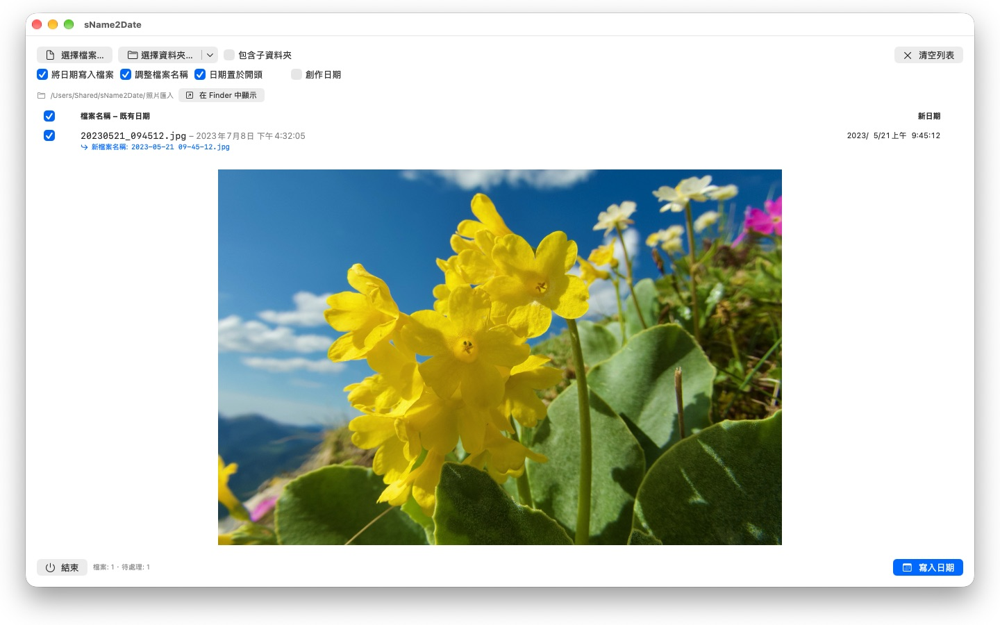
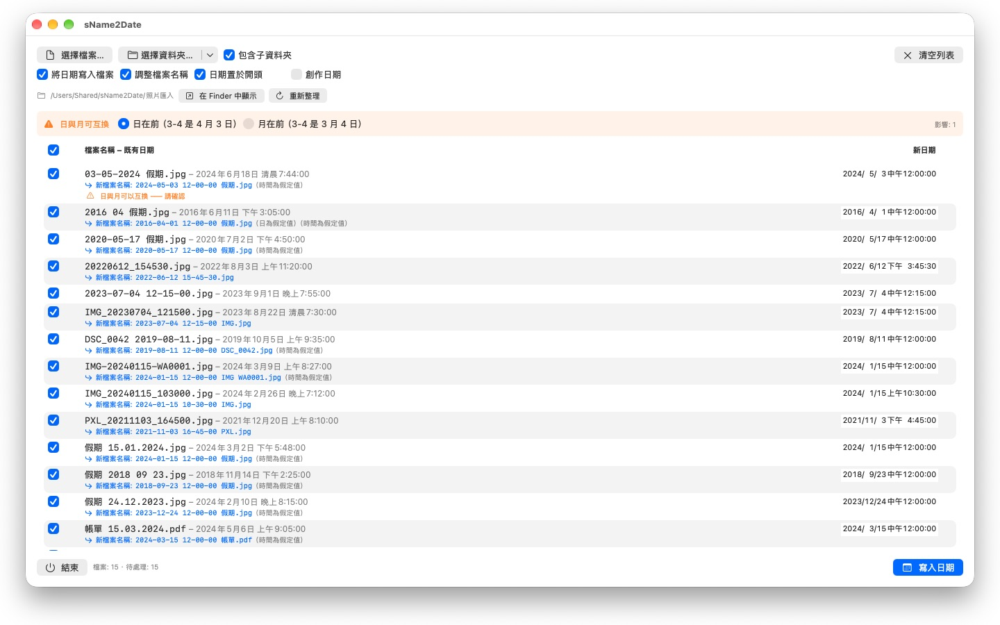

沒有拍攝日期的照片，在哪裡都排不進去。sName2Date 把日期從檔案名稱取出來，寫到每個照片管理程式尋找它的地方。


許多照片和影片把日期帶在檔案名稱裡，錄音和 PDF 等文件也是如此——卻不在程式尋找日期的地方。從聊天軟體、掃描器或舊封存匯入影像的人，拿到的是 IMG_20240115_103000.jpg、假期 15.01.2024.jpg 或 帳單 23112024.pdf 這樣的檔案，它們在每個照片管理程式和 Finder 裡都顯示成今天的日期。
sName2Date 從檔案名稱讀出日期，並把它當作拍攝日期寫進檔案。若檔案還沒有拍攝日期，就替它建立一個。對於 PDF 等沒有拍攝日期的檔案，App 會設定檔案的建立日期與修改日期。
可辨識的寫法
常見形式的日期與時間，其中包括：
- 2024-01-15 10-30-00
- IMG_20240115_103000
- IMG-20240115-WA0001
- 2024-01-15 · 2024 01 15 · 2024_01_15
- 15.01.2024 · 15-01-2024 · 15.01.24 · 15012024
- January 15 2024 · Jan. 15, 2024——英文的月份名稱
- 2016 04 · 04-2016——只有年與月
拼寫成文字的月份名稱，會以你的系統語言和英文讀取，長式與縮寫皆可。中文的月份寫法（1月）不是由字母組成的字詞，因此不在此列——中文名稱請用上面的數字形式，例如 2024-01-15 或 15.01.2024，這些一律讀得到。
名稱中只有日期時，會採用一個假定的時間；由你決定是哪一個。若連日也缺了，就以該月的第一天為準——列表會一併說明。名稱中有多個日期時，以第一個為準。而在日與月可能互換的情況下，由你的設定決定——受影響的檔案會特別標示出來，而不是默默猜測。
名稱中完全沒有日期時，你可以自己在該列右側填入。可回溯到 1826 年，也就是現存最早照片的年份——十九世紀掃描而來的影像，因此和昨天拍的一樣可以標註日期。
會更動什麼
寫入的是 EXIF DateTimeOriginal 與 DateTimeDigitized 以及 TIFF DateTime，影片與錄音則是容器中的建立日期。也可選擇一併寫入檔案本身的建立日期與修改日期。
影像資料維持原樣：JPEG 不會重新壓縮，影片不會重新編碼。處理影片與錄音時，本 App 通常只更動容器中的少數位元組，而不是重寫整個檔案——因此再大的影片也是一瞬間就完成。
能容納拍攝日期的格式有 JPEG、PNG、TIFF、HEIC 和 GIF，影片格式 MP4、MOV 和 M4V，以及音訊格式 M4A 和 M4B。
無法容納拍攝日期的檔案也能處理
PDF、文字檔、試算表根本沒有放拍攝日期的欄位——但它們照樣會進入列表。sName2Date 會在這些檔案上設定檔案本身的建立日期與修改日期，那是這個日期唯一能落到的地方；該列會以橙色勾號而不是綠色勾號來表示。所以這裡不看副檔名——PDF、文字檔、試算表、封存檔，全都可以。
若根本不希望檔案被碰到，就把視窗上方的「將日期寫入檔案」勾選取消。這時 sName2Date 只把名稱改成 ISO 寫法：帳單 15.03.2024.pdf 會變成 2024-03-15 12-00-00 帳單.pdf。在 Finder 中，資料夾便會依日期排序。你也可以選擇讓日期留在它原本在名稱中的位置，而不是移到最前面。
一切都可以還原
一次執行可用 Cmd+Z 完整還原——拍攝日期、檔案時間戳記，以及變更過的檔案名稱。Cmd+Shift+Z 可再次套用。
整個資料夾
sName2Date 可一次處理整個目錄樹，並可略過已經有拍攝日期的檔案。授權過一次的資料夾會被記住，不會再問第二次。
sName2Date Lite · 免費 — 每次處理一個檔案的版本：將檔案名稱中的日期作為拍攝日期寫入照片、影片或錄音，手動設定日期，將名稱改為 ISO 格式，並可用 ⌘Z 還原所有處理——功能與 sName2Date 相同，只是無法處理整個檔案夾。
- 需要 macOS 12 或以上版本
- 支援 24 種語言
- 技術支援： SwiftAppsBavaria@gmx.net
更多 App
sCollectPlay Lite
sCollectPlay 的精簡版：直接開啟檔案夾、iTunes XML 或 sCollect 媒體庫，播放其中的音樂、影片、有聲書與 Podcast——支援播放列表、音軌與字幕軌、慢動作與逐格播放。每次工作階段只能使用一個來源；分欄瀏覽器、自訂播放列表與最近使用的來源僅限完整版。
sBikeBridge
分析自行車騎乘紀錄，無需上傳至任何平台：讀取任何以此格式記錄的碼錶所產生的 FIT 檔案，以及 GPX 與 TCX。騎乘紀錄儲存在 Mac 上的專屬資料庫——包含地圖、功率與心率、照片與備註；匯入時會辨識重複項目。依年或依月的統計數據，以及依距離、爬升高度與時長篩選，讓騎乘紀錄易於比較。地圖也可視需要離線使用。